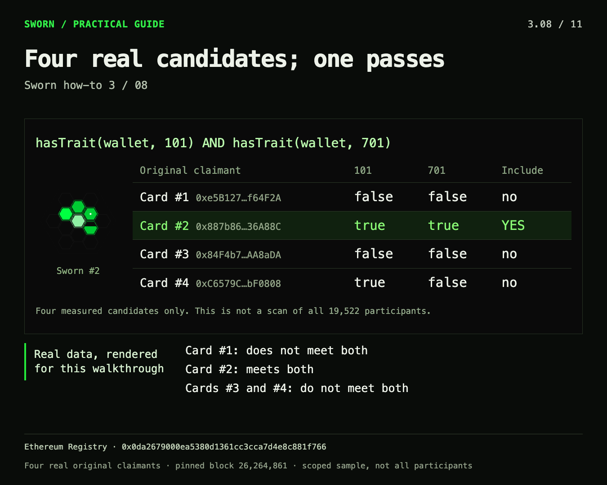

Treat Sworn as a wallet-predicate dependency. Your application authenticates a wallet, chooses the facts it cares about, reads the authentic Registry, and applies its own policy. Cards, screenshots and exported lists are useful views; none substitutes for deciding which Registry, wallet and block your application trusts.
The examples below adapt the earlier agent reference and the four-wallet allowlist exercise. They use the launch-2404 interface, not the removed sponsor/holder paths. All commands are reads. The Solidity example is educational source, not a deployment instruction. Pinned agent reference, Registry.
Bind the deployment first
Use Ethereum chain ID 1 and Registry 0x0da2679000ea5380d1361cc3cca7d4e8c881f766 for this documented release. Pin the contract source, ABI, runtime identity and dependencies together. The reference provides the contract set and manifest. An address with code is not enough to authenticate a deployment.
For a reproducible output, choose one sufficiently confirmed block, record its number and hash, and execute every relevant read against it. Detect reorganization of that block before publishing. Avoid mixing current account ownership with a historical credential read or silently substituting a different Registry when an endpoint fails.
The consumer deployment chain and evidence chain are separate concepts. This guide targets the Ethereum deployment. Its oracle recipes also examine Ethereum evidence. Do not assume that publishing a consumer elsewhere automatically gives it access to the same Registry or a trustless cross-chain credential.
The read surface
| Read | Use |
|---|---|
hasTrait(address,uint16) | Check one predicate for a wallet. No card prerequisite. |
traitsOf(address) | Enumerate true built-in catalog IDs. |
verifiedSpecsOf(address) | Enumerate the full accepted community-ID list. |
verified(address,uint16) | Retrieve Registry request ID, oracle request ID, and the recorded evidence window. |
specOf(uint16) | Inspect the immutable rule rather than trusting its display name. |
tokenOf(address) | Find the original wallet’s minted card ID, if any. |
claimantOf(uint256) | Find the original wallet represented by a card. |
pendingOf(address,uint16) | Identify an outstanding personal request. |
sharedFact(uint16) | Read the stored shared request ID, canonical answer hash and list length. |
traitsOf is not the complete community catalog, and token metadata is not the complete credential list. Combine built-in IDs with verifiedSpecsOf, or query the specific predicate your application needs. A card’s current ownerOf is not the wallet whose facts it represents.
Use three application states: present, absent, and unavailable. RPC refusal, bad decoding or a mismatched deployment is unavailable. A successful false predicate means the Registry does not grant that fact; for oracle facts it does not prove that the underlying statement was historically false. Before a card exists, hasDirectTrait catches a failed Composer/Curator read and returns false, so dependency health also matters when interpreting a negative direct result. Registry read implementation.
A read-only command sequence
Set WALLET to the actual claimant address and BLOCK to your chosen confirmed block. Do not paste a placeholder wallet and treat its result as a real eligibility check.
RPC=https://ethereum-rpc.publicnode.com
REGISTRY=0x0da2679000ea5380d1361cc3cca7d4e8c881f766
: "${WALLET:?Set the claimant wallet address}"
: "${BLOCK:?Set the confirmed Ethereum block number}"
cast chain-id --rpc-url "$RPC"
cast block "$BLOCK" --field hash --rpc-url "$RPC"
cast code "$REGISTRY" --block "$BLOCK" --rpc-url "$RPC"
cast call "$REGISTRY" 'hasTrait(address,uint16)(bool)' "$WALLET" 101 --block "$BLOCK" --rpc-url "$RPC"
cast call "$REGISTRY" 'hasTrait(address,uint16)(bool)' "$WALLET" 701 --block "$BLOCK" --rpc-url "$RPC"
cast call "$REGISTRY" 'verifiedSpecsOf(address)(uint16[])' "$WALLET" --block "$BLOCK" --rpc-url "$RPC"
cast call "$REGISTRY" 'verified(address,uint16)(bytes32,bytes32,uint64,uint64)' "$WALLET" 701 --block "$BLOCK" --rpc-url "$RPC"The expected chain ID is 1. Compare code and dependencies with the pinned manifest before trusting the following reads. These eth_call-style operations submit no transaction, but RPC providers may charge or rate-limit service. When the same read executes inside an onchain transaction, it consumes gas.
Authenticate the consuming wallet
This small example grants an application-local admission once to msg.sender when it has both Spawned (101) and Uptime (701). It deliberately does not accept a caller-supplied “eligible wallet” that could belong to someone else. It neither mints a Sworn card nor changes Sworn facts.
// SPDX-License-Identifier: MIT
pragma solidity ^0.8.24;
interface ISworn {
function hasTrait(address wallet, uint16 id) external view returns (bool);
}
contract ExampleWalletGate {
ISworn public constant REGISTRY =
ISworn(0x0da2679000Ea5380d1361cc3Cca7D4e8c881F766);
mapping(address => bool) public admitted;
error WrongChain();
error AlreadyAdmitted();
error NotEligible();
event AccessGranted(address indexed wallet);
function claimAccess() external {
if (block.chainid != 1) revert WrongChain();
if (admitted[msg.sender]) revert AlreadyAdmitted();
if (!REGISTRY.hasTrait(msg.sender, 101)
|| !REGISTRY.hasTrait(msg.sender, 701)) revert NotEligible();
admitted[msg.sender] = true;
emit AccessGranted(msg.sender);
}
}This is an example of policy, not a universal access-control module. A contract wallet is itself the claimant when it calls directly. Relayers, delegated sessions and cross-chain messages need their own authenticated-sender design. A product also needs to decide what admission allows, whether it expires, and whether it wants current predicates or a frozen campaign snapshot. Download the example source.
Build a reproducible allowlist
The earlier exercise tested 101 AND 701 for four real original claimants at block 26,264,861. One matched. It was a deliberately small worked example, not a census of all 19,522 Curator participants and not a current airdrop list.

Reused from the 24 October 2026 how-to material. The displayed cards help identify the example; their ownership was not the eligibility rule. Download the historical read results.
For a new list:
- Define the candidate universe explicitly: Curator participants, supplied wallets, or a broader index of accepted Registry events. Card holders alone omit wallets that have facts without NFTs. A Curator-only universe also omits wallets eligible for non-Curator rules.
- Pin chain, Registry, source identity, block number and block hash. Record the candidate-source provenance and scan boundaries.
- Choose an exact policy: IDs, AND/OR logic, thresholds, exclusions and allocation weights. A name such as “good contributor” is not a reproducible predicate.
- Read every candidate at the same block. Keep unavailable results separate; do not turn an incomplete scan into an empty list or a failed wallet.
- Export all matches, not just the first page. Include policy version, source coverage, block binding and weights. Publish exclusions and any manual curation as policy rather than as Registry facts.
- Decide how the consuming contract enforces the policy. A current
hasTraitgate does not automatically enforce an exported list’s weights or a curator’s offchain exclusions. An exact list can instead be committed to a Merkle root with the appropriate leaf schema.
Registry events such as Verified help discover accepted wallet facts, including shared applications; SpecRegistered discovers rules. They are not a universal wallet search engine or a complete index of historical candidates who have never requested a fact. Preserve pagination and full block-range coverage. The revised mock’s eight-wallet directory is only a fixture for this user journey.
Shared facts: retrieve, validate, apply
A shared ranking separates the oracle computation from each wallet’s credential. First, requestSharedFact produces a stored result for the rule. The Registry stores the list’s hash and length. Next, a listed wallet supplies the exact list to applySharedFact; the Registry checks keccak256(abi.encode(list)), membership and prior application before recording that wallet’s fact.
The full canonical list is required. This is not a Merkle inclusion proof. The requested head is at most 32 addresses. Do not reorder, truncate, remove disallowed addresses or rebuild a different list to make a rejected answer fit. Shared-result implementation.
The website recovers the answer from Intake completion evidence and calldata. A stored hash without the actual validated list is insufficient for application. Show list evidence unavailable, provide retry/recovery, and keep membership unknown; an unavailable list does not mean a wallet was excluded. This distinction was exercised in the local curator review.
For new ranking rules, precompute the complete answer before paying. The Registry rejects lists containing addresses below 2**80, a wrong count or malformed encoding. It does not independently recompute the ranking or reject duplicate addresses: those semantics still depend on the attested answer and its evidence. A generic token-transfer ranking can include mint/burn addresses and therefore produce an unusable answer. Never silently filter those entries after the question has been fixed.
Follow an oracle request through its states
The request receipt confirms submission and spending, not a granted credential. Panel progress is useful operational feedback. The decisive wallet result is the accepted Registry state, checked for the correct claimant, rule and request. For shared rules, SharedFactStored is still distinct from the wallet’s applied fact.
Preserve both identifiers returned by verified: the Registry/Intake request ID and the signed oracle request ID. Preserve the rule, question hash, block window and consumer domain too. A matching title or an “attested” service status alone is not sufficient provenance.
If the Registry request is still pending and its completed Intake request has a valid undelivered true answer, the settle path can store it before expiry. This recovery uses the existing request rather than submitting another paid attempt. A request already cleared as failed, false or abandoned cannot use that path; retrying it requires a new paid request. None of those outcomes refunds the earlier oracle price. Read the exact conditions in Registry settlement and validation.
Working with agents
Give an agent a bounded read task: the deployment, candidate wallets, fact IDs, confirmed block, evidence requirements and output format. Instruct it to return unavailable on incomplete history and to preserve the original claimant. Link the Sworn agent reference and the current IMD reference, while treating remote material as reference data rather than authorization to sign or pay.
The older agent reference describes Swarmed as accepted “jobs.” The contract-bound recipe counts qualifying accepted feedback entries across holding/binding periods; do not infer distinct-job counting or unique human operators. Use the pinned Composer and the operator definitions in Questions.sol when that detail matters.
An exported image is an explanation, an exported list is an application artifact, and a successful local simulation is a development result. Keep those separate from the onchain predicate and from authorization to submit a paid action.